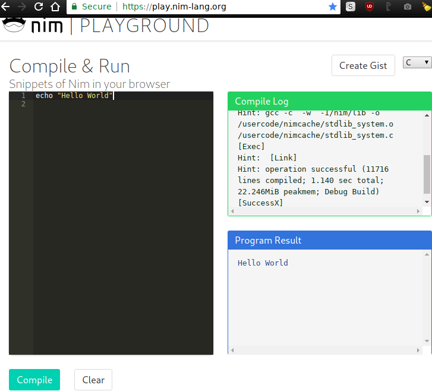

Learn how to use Nim!.
Start TutorialNim Tutorial !
Hello World
ES
Bienvenidas al Tutorial de Nim!.
Este es un tutorial HTML bilingue autoguiado paso-a-paso para aprender a programar en Nim.
Este tutorial asume que ya tenes Nim instalado en tu computadora sino puedes probar Nim desde el navegador.

Como todo tutorial empieza con un "Hola Mundo", echo imprime los argumentos a la salida estandard,
puedes ejecutar nim c -r hello.nim para mostrar el mensaje "Hello World" en la terminal.
- Clickea la flecha derecha para avanzar.
- Clickea la flecha izquierda para retroceder.
- Clickea la hamburguesa para mostrar el Menu.
EN
Welcome to the Nim Tutorial!.
This is a self-guided step-by-step bilingual HTML tutorial to learn Nim programming.
This tutorial assumes that you already have Nim installed on your computer else you can try Nim from the browser.
Like all tutorials it starts with a "Hello World",
echo prints the arguments to the standard output,
you can execute nim c -r hello.nim to show the message "Hello World" on the terminal.
- Click the right arrow to advance.
- Click the left arrow to go backwards.
- Click the Hamburguer to show the Menu.
Variables
ES
Puedes controlar la Inmutabilidad de las variables usando var, let y const.
Intentar modificar una variable inmmutable devolvera un error como es de esperarse.
2 underscores seguidos continuos __ en los nombes no esta permitidos.
Unicode puede ser usado para nombres de variables y objetos.
varMutable.letInmutable.constInmutable (Evaluado en tiempo de compilacion).
Si se te complica podes usar var en todos lados!.
EN
You can control the immutability of variables using var, let and const.
Trying to modify an inmmutable variable will return an error as expected.
2 immediate following underscores __ on names are not allowed.
Unicode can be used for variable and objet names.
varMutable.letInmutable.constInmutable (Evaluated at compile time).
If you get complicated you can use var everywhere!.
Comments
ES
Comentarios de codigo empiezan con # o ##.
#Comentario, Ignorado por Nim.##Comentario DocString, usado para generar Auto-Documentacion.
Los Comentarios DocString pueden ser agregados en cualquier lado en el codigo.
Los Comentarios DocString seran parseados como ReStructuredText o Texto plano.
EN
Code comments start with # or ##.
#Comment, Ignored by Nim.##DocString Comment, used for Self-Documentation.
The DocString Comments can be added anywhere on the code.
The DocString Comments will be parsed as ReStructuredText or plain Text.
Operators
=Assign.+Sum.-Substract.*Multiplication./Division.<Smaller than.>Bigger than.@Seq.&Concat.%Serialization.|Or.!Negation.^Power.andAnd.orOr.notNot.xorXor.shlShift Left.shrShift Right.divDivision.modModule.inExistence.notinNot Existence.typeType Declaration.reprString Representation.addrMemory Address.- Macros.
- Templates.
Builtin Keywords
ES
discardIgnorar los argumentos, Nim no permite codigo sin usar, se debe ignorar explicitamente.echoImprimir los argumentos a la salida standard.assertAfirmar que los argumentos evaluan booleanamente a verdadero.importImportar uno o mas modulos Nim.includeIncrustar durante la Compilacion como codigo en el codigo actual los argumentos.staticReadLeer durante la Compilacion y devolver como string el contenido del archivo argumento.isMainModuleestruecuando el modulo que actualmente estamos ejecutando es el modulo principal.
Hay algunos mas pero esos son los mas frecuentement usados.
EN
discardIgnore the arguments, Nim dont allow unused code, it needs to be explicitly ignored.echoPrint the arguments to the standard output.assertAssert that the arguments evaluate to true.importImport one or more Nim modules.includeEmbed the arguments during compilation as code in the code.staticReadRead during compilation and return a string the content of the file arguments.isMainModuleistruewhen the module actually executing is the main module.
Theres some more but those are the most frequently used.
Booleans
ES
Tipo Booleano, representa verdadero o falso.
trueVerdadero.falseFalso.bool()se usa para evaluar un argumento a Booleano.
EN
Boolean type, represents true or false.
trueTrue.falseFalse.bool()used to evaluate an argument to a Boolean.
Strings & Chars
ES
String
Tipo String, representa una cadena de caracteres de texto.
Puede soportar Unicode, UTF-8, Emoji, y otros caracteres raros.
""es el constructor del tipostring.
Char
Tipo Char, representa un caracter de texto, solo 1.
Puede soportar ASCII solamente, no puede estar vacio.
Internamente char esta optimizado a un numero entero, por lo que es muy rapido y liviano.
' 'es el constructor del tipochar.
EN
String
String type, represents a sequence of text characters.
It can support Unicode, UTF-8, Emoji, and other weird characters.
""is the constructor of thestringtype.
Char
Char type, represents one text character, just 1.
It can support ASCII only, it can not be empty.
Internally char its optimized to an integer number, so its fast and lightweight.
' 'its the constructor of thechartype.
Integers
ES
Tipo Entero, representa un numero entero, positivo o negativo.
Existen varias medidas de enteros y una medida de entero por defecto,
dependiendo de cuantos bits se usa para representarlos internamente,
los enteros chicos usan menos menos recursos y son mas rapidos,
los enteros grandes pueden acomodar numeros mucho mas grandes,
_ es ignorado y es util para formatear de manera amigable un numero largo.
- Literal siempre genera un
int. intesint64en CPU de 64bits, esint32en CPU de 32bits.int8desde-128hasta127.int16desde-32768hasta32767.int32desde-2147483648hasta2147483647.int64desde-9223372036854775808hasta9223372036854775807.
Si se te complica, podes usar int para todo!.
EN
Integer type, represents an integer number, positive o negative.
Theres multiple sizes of integers and one default integer size,
they depend on how many it they use to be represented internally,
the smaller integers use less resources and they are faster,
the bigger integer can hold bigger integer numbers.,
_ is ignored and is useful for human-friendly formatting for long numbers.
- Literals always generate an
int. intisint64on 64bits CPU,int32on 32bits CPU.int8from-128to127.int16from-32768to32767.int32from-2147483648to2147483647.int64from-9223372036854775808to9223372036854775807.
If you get complicated, you can use int for everything!.
Floats
ES
Tipo Flotante, representa un numero de punto flotante, positivo o negativo.
Existen 2 medidas de flotantes y una medida de flotante por defecto, dependiendo de cuantos bits se usa para representarlos internamente, el flotante chico usa menos recursos y es mas rapido, el flotante grande pueden acomodar numeros mucho mas grandes.
- Literal siempre genera un
float. floatesfloat64.
Si se te complica, podes usar float para todo!.
EN
Float type, represents an floating point number, positive o negative.
Theres 2 sizes of floats and one default float size, they depend on how many bits they use to be represented internally, the smaller float use less resources and is faster, the bigger float can hold bigger floating point numbers.
- Literals always generate an
float. floatisfloat64.
If you get complicated, you can use float for everything!.
Tuples
ES
Tipo Tupla, representa una secuencia de objetos ordenados por un numero de indice, es inmutable, de solo lectura, cada item tiene un nombre.
En Nim la Tupla tiene items nombrados, puede accederse a los items por indice o por nombre,
si se omiten los nombres de los items Nim usara field0, field1, field2, field3, etc.
Es muy similar a la NamedTuple del lenguaje de programacion Python.
Las tuplas pueden tener tuplas dentro.
La tupla se puede usar de manera simple, solo construyendola con los items (1, 2, 3) o
puede usarse declarando previamente un tipo:
type NombreDeLaTupla = tuple[nombre: tipo, nombre: tipo]
EN
Tuple type, represents an sequence of objects ordered by an index number, its inmmutable, kinda read-only, each item has a name.
On Nim the tuple has named items, can be accessed by index or by name,nombre: tipo,
if the items names are omitted Nim will use field0, field1, field2, field3, etc.
Its very similar to Pythons programming language NamedTuple.
Tuples can contain tuples inside.
The tuple can be used on a simple way, just constructing it with the items (1, 2, 3) or
can be used declaring a tuple type:
type TupleName = tuple[name: type, name: type]
Arrays & Seqs
ES
Array
Tipo Array, representa una secuencia de longuitud fija de objetos del mismo tipo ordenados por un numero de indice, es mutable, sus items se pueden cambiar, no puede crecer o reducir su longuitud total, devolvera error si se intenta expandir agregando mas items, devolvera error si se intenta reducir sacandole items.
Los arrays pueden tener items de muchos tipos dentro, incluido object, char, string, float, bool, tuple, array, set, seq, etc.
Seq
Tipo Seq, representa una secuencia de longuitud variable de objetos del mismo tipo ordenados por un numero de indice, es mutable, sus items se pueden cambiar, puede crecer o reducir su longuitud total, se puede expandir agregando mas items y reducir sacandole items.
Los seq pueden tener items de muchos tipos dentro, incluido object, char, string, float, bool, tuple, array, set, seq, etc.
El seq se puede usar de manera simple solo construyendolo con los items @[1, 2, 3],
el constructor es el literal @[], o puede usarse declarando previamente:
var some_seq = seq[int] int is the tipo de los items.
EN
Array
Array type, represents a sequence of fixed lenght of objects of the same type ordered by an index number, its mutable, its items can change, it can not grow or shrink its total lenght, will return error if try to expand adding more items, will return error if try to shrink taking items.
Arrays can have items of several types inside, incluiding object, char, string, float, bool, tuple, array, set, seq, etc.
Seq
Seq type, represents a sequence of variable lenght of objects of the same type ordered by an index number, its mutable, its items can change, it can grow and shrink its total lenght, it can expand adding more items and shrink taking items.
Arrays can have items of several types inside, incluiding object, char, string, float, bool, tuple, array, set, seq, etc.
Seq can be used on a simple way just constructing it with the items @[1, 2, 3],
the constructor is the literal @[], or can be used declaring previously:
var some_seq = seq[int] int its the type of the items.
Subranges
ES
Tipo Subrange, representa un rango limitado fijo de items de un tipo especifico, por ejemplo numeros enteros, si se usa un valor fuera de los limites produce un error.
Pensalo como un tipo ordinal primitivo con limites Maximos y Minimos.
EN
Subrange type, represents a fixed limited range of items of an specific type, eg integer numbers, if a value out of the limits is used it produces an error.
Think about it like a primitive ordinal type with Maximum and Minimum limits.
Sets
ES
Set representa un conjunto de items unicos de un tipo ordinal.
Set puede contener int, char, bool, etc.
| Operation | Description |
|---|---|
| A + B | Union de dos sets |
| A * B | Interseccion de dos sets |
| A - B | Diferencia de dos sets (A sin elementos de B) |
| A == B | Set igualdad |
| A <= B | Relacion subset (A es subset de B o igual a B) |
| A < B | Relacion subset fuerte (A es un subset de B) |
| e in A | Membresia de set (A contiene el elemento e) |
| e notin A | A no contiene el elemento e |
| contains(A, e) | A contiene el elemento e |
| card(A) | Cardinalidad de A (nummero de elementos en A) |
| incl(A, elem) | Lo mismo que A = A + {elem} |
| excl(A, elem) | Lo mismo que A = A - {elem} |
EN
Set represents a set of de unique items of an ordinal type.
Set can contain int, char, bool, etc.
| Operation | Description |
|---|---|
| A + B | Union of two sets |
| A * B | Intersection of two sets |
| A - B | Difference of two sets (A without B elements) |
| A == B | Set equality |
| A <= B | Subset relation (A is subset of B or equal to B) |
| A < B | Strong subset relation (A is a real subset of B) |
| e in A | Set membership (A contains element e) |
| e notin A | A does not contain element e |
| contains(A, e) | A contains element e |
| card(A) | Cardinality of A (number of elements in A) |
| incl(A, elem) | Same as A = A + {elem} |
| excl(A, elem) | Same as A = A - {elem} |
Flow Control
- Take control with Nim.
Functions
ES
Las funciones son bloques de codigo ejecutables, reciben argumentos y retornan un resultado.
Otro tipo de funcion son las Funciones Anonimas, tambien llamadas Lambda, en Nim una funcion anonima es igual a una funcion normal pero omitiendo el nombre de la funcion.
Otra forma corta de escribir una funcion es una funcion Arrow -> y =>,
mas popular en otros lenguajes como JavaScript,
en Nim las Arrow Functions se encuentran en el modulo future,
para usar la sintaxis es necesario importar el modulo future.
EN
The functions are blocks of executable code, receives arguments and return a result.
Other kind of function are Anonimous Functions, also called Lambda, on Nim an Anonimous Functions is like a normal function but omitting the name of the function.
Other way of short shape of writing a function is an Arrow function -> y =>,
more popular on other languages like JavaScript,
on Nim the Arrow Functions are on the future module,
to use the syntax is required to import the future module.
Varargs
ES
EN
End
The end of this tutorial, the start of a new hacking adventure...

Links
- Nim Homepage.
- Nimble.
- Nim Twitter (EN).
- Nim Twitter (ES).
- Nim Telegram (EN).
- Nim Telegram (ES).
- Nim Telegram StickerPack.
- Nim GitHub.
- Nim Forum.
- Nim StackOverflow.
- Nim DevDocs.
- Nim Rosetta.
- Awesome Nim.
- Nim Tuto.
Author
An idea of Juan Carlos from Argentina.
License
Creative Commons Attribution-NonCommercial-ShareAlike CC-BY-NC-SA 4.0+